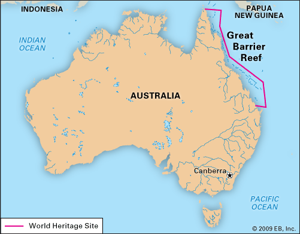

About Our Cause
The Great Barrier Reef, the largest coral reef system in the world, stretches over 2,300 kilometers off the coast of Queensland, Australia. Unfortunately, it is facing significant threats from water pollution, primarily caused by industrial pollutants, plastic waste, and agricultural runoff. River systems, particularly the Fitzroy and Burdekin Rivers, transport urban and agricultural debris into the reef, leading to severe damage. Excess nutrients from farming, along with sedimentation from land clearing, fuel algae growth that blocks sunlight and smothers coral. Plastic waste also harms marine life through ingestion and entanglement, further disrupting the delicate ecosystem.
To fully understand the impact, it’s essential to grasp key environmental concepts such as eutrophication, bioaccumulation, and sedimentation. Eutrophication occurs when excess nutrients, like nitrogen and phosphorus, promote harmful algal blooms and reduce oxygen levels, which are harmful to marine life. Sedimentation clouds the water, blocking sunlight and hindering coral growth. Bioaccumulation refers to the buildup of toxins in the food chain, affecting higher species like fish, turtles, and birds. Together, these factors significantly alter the reef’s ecosystem and threaten biodiversity.
The reef is not only an ecological wonder but also provides vital ecosystem services such as supporting fisheries, attracting tourism, and offering coastal protection. The degradation of the Great Barrier Reef has far-reaching consequences for both the environment and human society. Protecting the reef is crucial for maintaining its ecological balance and the benefits it provides to millions of people and species worldwide.
To explore the history of conservation efforts for the Great Barrier Reef, please visit the History tab on our homepage. If you're interested in supporting the reef, there are many ways you can get involved. Browse through the sections on community-led conservation, political initiatives, donations, and petitions to learn how you can make a difference.